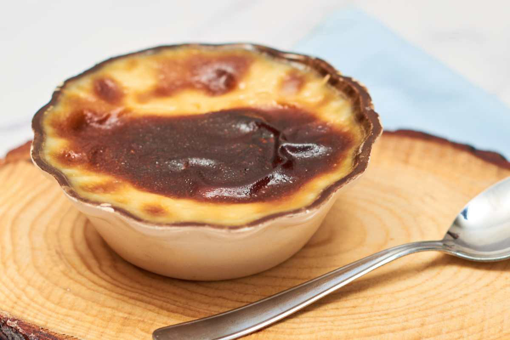

Introducción
La gastronomía de Jalisco es una de las más conocidas de México por la variedad de sus platillos, el uso de ingredientes tradicionales y el valor cultural de sus recetas.
Comer en Jalisco no solo significa alimentarse, sino también participar en una tradición que forma parte de reuniones familiares, fiestas populares y costumbres cotidianas.
Muchos de sus platillos se reconocen por sus sabores intensos y por la manera en que reflejan la historia y la identidad regional.
Platillos y bebidas
- Birria
- Torta ahogada
- Pozole
- Jericalla
- Tequila y tejuino
📸 Platillos representativos
Torta ahogada

Birria

Tequila

| 🍮 Más imágenes |
|---|
|
Jericalla
 |
Pozole

|
🍽️ Importancia cultural de la comida
La comida jalisciense forma parte de reuniones, celebraciones y recuerdos familiares. Muchas recetas se aprenden en casa y pasan de una generación a otra.
Por eso, la gastronomía del estado no solo se distingue por su sabor, sino también por su valor histórico, social y cultural.
🍔 Tradición que une a las familias
La preparación de alimentos típicos también funciona como un espacio de convivencia. En muchas casas y celebraciones, cocinar recetas tradicionales es una manera de compartir costumbres y mantener vivas las enseñanzas familiares.
Esto convierte a la gastronomía en una parte esencial de la identidad de Jalisco, ya que une sabor, historia y convivencia.